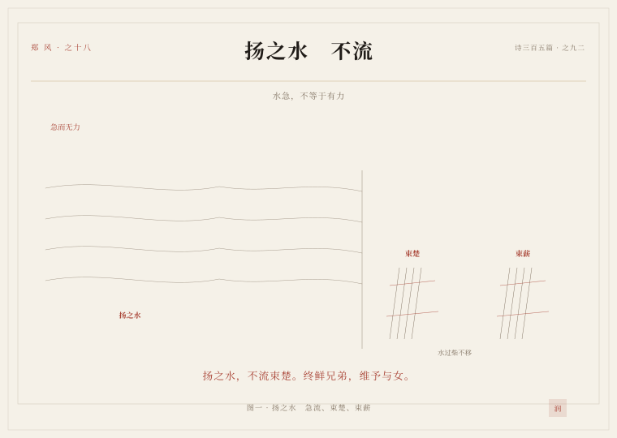
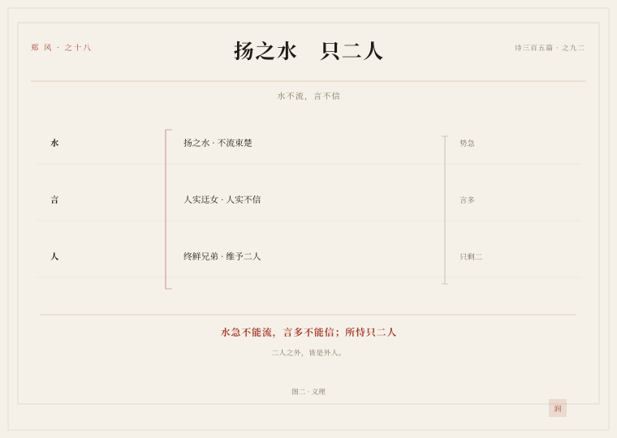

第九十二篇 扬之水
郑风 · 之十八 SJ092
朗读 · 普通话
依经文原文朗读，章次不读出；配古琴底乐，不改速、不加拖腔。全库同一音色（豆包 TTS），非播音员录制。
一 解题
诗三判：
- 谁在说：一个只剩“二人”的人。他看水，水急却漂不动一捆柴；他看身边，兄弟已少；他听外面，人人都在传话。
- 说什么事：两章。前章“束楚”，后章“束薪”；前章“维予与女”，后章“维予二人”；前章“人实迋女”，后章“人实不信”。所换是柴，所同是“只信这一个人”。
- 为何编在此：郑风之十八。091 写“等不到音”，092
写“只信二人”。一个音断，一个言多；都是关系只剩一线。
《毛序》：“《扬之水》，闵无臣也。君子闵忽之无忠臣良士，终以死亡，而作是诗也。”
朱子《诗集传》：“兴也。兄弟婚姻之称、礼所谓、不得嗣为兄弟是也。予女、男女自相谓也。人、他人也。迋、与诳同。○淫者相谓、言扬之水、则不流束楚矣。终鲜兄弟、则维予与女矣。岂可以他人离间之言而疑之哉。彼人之言、特诳女耳。”
本库的看法：《扬之水》是一首把“弱”写成“不能流”的诗。
水是“扬”的，浪是急的，却连一捆柴都漂不走。急不等于有力。
人也一样：兄弟少，亲族薄，只剩“予与女”“予二人”。外面的话越多，里面的人越少。“无信人之言”不是劝，是最后的防线；一信，二人就散。
先辨五事：“扬”是激扬，不是“杨树”；“束楚”是捆荆，不是“楚人”；“鲜”是少，不是“新鲜”；“迋”是诳，不是“廷”；“兄弟”朱子指婚姻之称，不一定是同姓兄弟。
二 经文
第一章
扬之水，不流束楚。
终鲜兄弟，维予与女。
无信人之言，人实迋女。
第二章
扬之水，不流束薪。
终鲜兄弟，维予二人。
无信人之言，人实不信。
分章：二章，章六句。
三 韵读
- 一章：楚、女、女，鱼部；三句一韵。
- 二章：薪、人、信，真部；朱子“信叶斯人反”。
读法：鱼部开口，像水散；真部收齿，像人言切切。由散到紧，由水到人。
四 字义与名物
- 扬之水：激扬之水；水势急而散。束楚：一捆荆条。束薪：一捆柴。
- 终：终究、毕竟。鲜：少。维：只。予：我。女：你。
- 迋：诳、欺骗。人：他人、外人。不信：不可信；一说“不诚”。
- 兄弟：朱子以为婚姻之称；毛传以为同姓亲族。
五 今译
激扬的水，漂不走一捆荆条。终究兄弟太少，只有我和你。不要信外人的话，外人是在诳你。
激扬的水，漂不走一捆柴。终究兄弟太少，只有我们两个人。不要信外人的话，外人实在不可信。
六 章旨
- 一章：写“束楚”与“予与女”。水急不流，亲少只剩一人；外言一进，二人就危。
- 二章：写“束薪”与“二人”。柴换，人数不变；“不信”比“迋”更冷。
- 总收：水急不能流，言多不能信；所恃只二人。
二人之外，皆是外人。
七 诗教
- 兴：以“扬之水”起兴。水越急，越漂不动柴；势与力，不是一回事。
- 观：观“无臣”与“无信”。毛序看见朝廷无忠臣，朱子看见二人被离间；一国之弱，也是二人之弱。
- 群：关系越薄，越经不起第三个人的话；“二人”是最小的群。
- 怨：诗里没有怨天，只怨“人言”。怨得具体，才守得住。
八 分寸与边界
- 不可把“扬”读成“杨”。扬是激扬；一读成树，水就静了。
- 不可把“束楚”读成“楚国人”。它是捆荆；一读成国，柴就没了。
- 不可把“鲜”读成“新鲜”。它是少；一读成鱼鲜，兄弟就成了菜。
- 不可把“迋”读成“廷”。它是诳；一读成朝廷，外言就成了政令。
- 不可把“兄弟”只当同姓。朱子指婚姻之称；一读死，诗就只剩宗族。
九 存疑
- 诗旨：毛序“闵无臣，闵忽无忠臣良士”；朱子“淫者相谓”。一政一情；本库两存，以“二人守言”读。
- “兄弟”：毛传同姓亲族；朱子婚姻之称。两存，从朱子更贴“予与女”。
- “迋”：诳；一本作“廷”。从“迋”，才与“无信”相应。
- “不信”：不可信；一说“不诚”。两读相近。
- 作者与年代：序系于忽；朱子以为“淫者”。无确证。
十 跨典
- 《左传·隐公三年》：“信不由中，质无益也。”——周郑交质，正见“人言”与“信”的崩。
- 《论语·颜渊》：“民无信不立。”——二人之间无信，也立不住。
- 《礼记·中庸》：“不信乎朋友，不获乎上矣。”——外言一信，朋友先失。
- 《诗本音》：一章楚、女、女鱼部，二章薪、人、信真部，见卷三。
十一 双卡与图
双卡七对：
| 扬（激扬） |
扬（杨树） |
| 束楚（捆荆） |
束楚（楚人） |
| 鲜（少） |
鲜（新鲜） |
| 维（只） |
维（维系） |
| 迋（诳） |
迋（朝廷） |
| 人言（外人之言） |
人言（众人之语） |
| 不信（不可信） |
不信（不诚信） |

图一 · 扬之水 急流、束楚、束薪

图二 · 扬之水 水、言、二人
读图三处：
- 急流与柴：图一左急流三道，右一捆荆、一捆柴置岸上；水碰得到柴，却带不走。
- 二人一柱：图二中间一根短柱，左“予”右“女”，柱下只容两人；二人是全部。
- 外言在门外：图二四周散落小字“人言”，都用虚线，不进门；虚线是未信，进门就断。